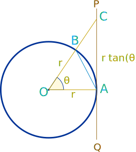

Proof of the Derivatives of
sin, cos and tan
The three most useful derivatives in trigonometry are:
ddx sin(x) = cos(x)
ddx cos(x) = −sin(x)
ddx tan(x) = sec2(x)
Did they just drop out of the sky? Can we prove them somehow?Proving the Derivative of Sine
We need to go back, right back to first principles, the basic formula for derivatives:
dydx = limΔx→0 f(x+Δx)−f(x)Δx
Pop in sin(x):
ddxsin(x) = limΔx→0 sin(x+Δx)−sin(x)Δx
We can then use this trigonometric identity: sin(A+B) = sin(A)cos(B) + cos(A)sin(B) to get:
limΔx→0 sin(x)cos(Δx) + cos(x)sin(Δx) − sin(x)Δx
Regroup:
limΔx→0 sin(x)(cos(Δx)−1) + cos(x)sin(Δx)Δx
Split into two limits:
limΔx→0 sin(x)(cos(Δx)−1)Δx + limΔx→0cos(x)sin(Δx)Δx
And we can bring sin(x) and cos(x) outside the limits because they are functions of x not Δx
sin(x) limΔx→0 cos(Δx)−1Δx + cos(x) limΔx→0 sin(Δx)Δx
Now all we have to do is evaluate those two little limits. Easy, right? Ha!
Limit of sin(θ)θ
Starting with
limθ→0 sin(θ)θ
with the help of some geometry:

We can look at areas:
Area of triangle AOB < Area of sector AOB < Area of triangle AOC
12r2 sin(θ) < 12r2 θ < 12r2 tan(θ)
Divide all terms by 12r2 sin(θ)
1 < θsin(θ) < 1cos(θ)
Take the reciprocals:
1 > sin(θ)θ > cos(θ)
Now as θ→0 then cos(θ)→1
So sin(θ)θ lies between 1 and something that is tending towards 1
So as θ→0 then sin(θ)θ →1 and so:
limθ→0 sin(θ)θ = 1
(Note: we should also prove this is true from the negative side, how about you try with negative values of θ ?)
Limit of cos(θ)−1θ
So next we want to find out this one:
limθ→0 cos(θ)−1θ
When we multiply top and bottom by cos(θ)+1 we get:
(cos(θ)−1)(cos(θ)+1)θ(cos(θ)+1) = cos2(θ)−1θ(cos(θ)+1)
Now we use this trigonometric identity based on Pythagoras' Theorem:
cos2(x) + sin2(x) = 1
Rearranged to this form:
cos2(x) − 1 = −sin2(x)
And the limit we started with can become:
limθ→0 −sin2(θ)θ(cos(θ)+1)
That looks worse! But is really better because we can turn it into two limits multiplied together:
limθ→0sin(θ)θ × limθ→0−sin(θ)cos(θ)+1
We know the first limit (we worked it out above), and the second limit doesn't need much work because at θ=0 we know directly that −sin(0)cos(0)+1 = 0, so:
limθ→0sin(θ)θ × limθ→0−sin(θ)cos(θ)+1 = 1 × 0 = 0
Putting it Together
So what were we trying to do again? Oh that's right, we really wanted to work out this:
ddxsin(x) = sin(x) limΔx→0 cos(Δx)−1Δx + cos(x) limΔx→0 sin(Δx)Δx
We can now put in the values we just worked out and get:
ddxsin(x) = sin(x) × 0 + cos(x) × 1
And so (ta da!):
ddxsin(x) = cos(x)
The Derivative of Cosine
Now on to cosine!
ddxcos(x) = limΔx→0 cos(x+Δx)−cos(x)Δx
This time we will use the angle formula cos(A+B) = cos(A)cos(B) − sin(A)sin(B):
limΔx→0 cos(x)cos(Δx) − sin(x)sin(Δx) − cos(x)Δx
Rearrange to:
limΔx→0 cos(x)(cos(Δx)−1) − sin(x)sin(Δx)Δx
Split into two limits:
limΔx→0 cos(x)(cos(Δx)−1)Δx − limΔx→0sin(x)sin(Δx)Δx
We can bring cos(x) and sin(x) outside the limits because they are functions of x not Δx
cos(x) limΔx→0 cos(Δx)−1Δx − sin(x) limΔx→0 sin(Δx)Δx
And using our knowledge from above:
ddx cos(x) = cos(x) × 0 − sin(x) × 1
And so:
ddx cos(x) = −sin(x)
The Derivative of Tangent
To find the derivative of tan(x) we can use this identity:
tan(x) = sin(x)cos(x)
So we start with:
ddxtan(x) = ddx(sin(x)cos(x))
Now we can use the quotient rule of derivatives:
(fg)’ = gf’ − fg’g2
And we get:
ddxtan(x) = cos(x) × cos(x) − sin(x) × −sin(x)cos2(x)
ddxtan(x) = cos2(x) + sin2(x)cos2(x)
Then use this identity:
cos2(x) + sin2(x) = 1
To get
ddxtan(x) =1cos2(x)
Done!
But most people like to use the fact that cos = 1sec to get:
ddxtan(x) = sec2(x)
Note: we can also do this:
ddxtan(x) = cos2(x) + sin2(x)cos2(x)
ddxtan(x) = 1 + sin2(x)cos2(x) = 1 + tan2(x)
(And, yes, 1 + tan2(x) = sec2(x) anyway, see Magic Hexagon )
Taylor Series
Just on a fun side note, we can use the Taylor Series expansions and differentiate term by term.
Example: sin(x) and cos(x)
The Taylor Series expansion for sin(x) is
sin(x) = x − x33! + x55! − ...
Differentiate term by term:
ddx sin(x) = 1 − x22! + x44! − ...
Which perfectly matches the Taylor Series expansion for cos(x)
cos(x) = 1 − x22! + x44! − ...
Let's also differentiate that term by term:
ddx cos(x) = 0 − x + x33! − ...
Which is the negative of the Taylor Series expansion for sin(x) we started with!
But this is "circular reasoning" because the original expansion of the Taylor Series already use the rules "the derivative of sin(x) is cos(x)" and "the derivative of cos(x) is −sin(x)".